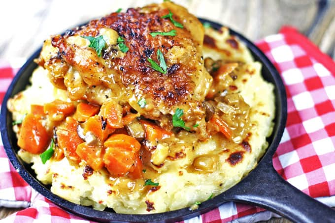
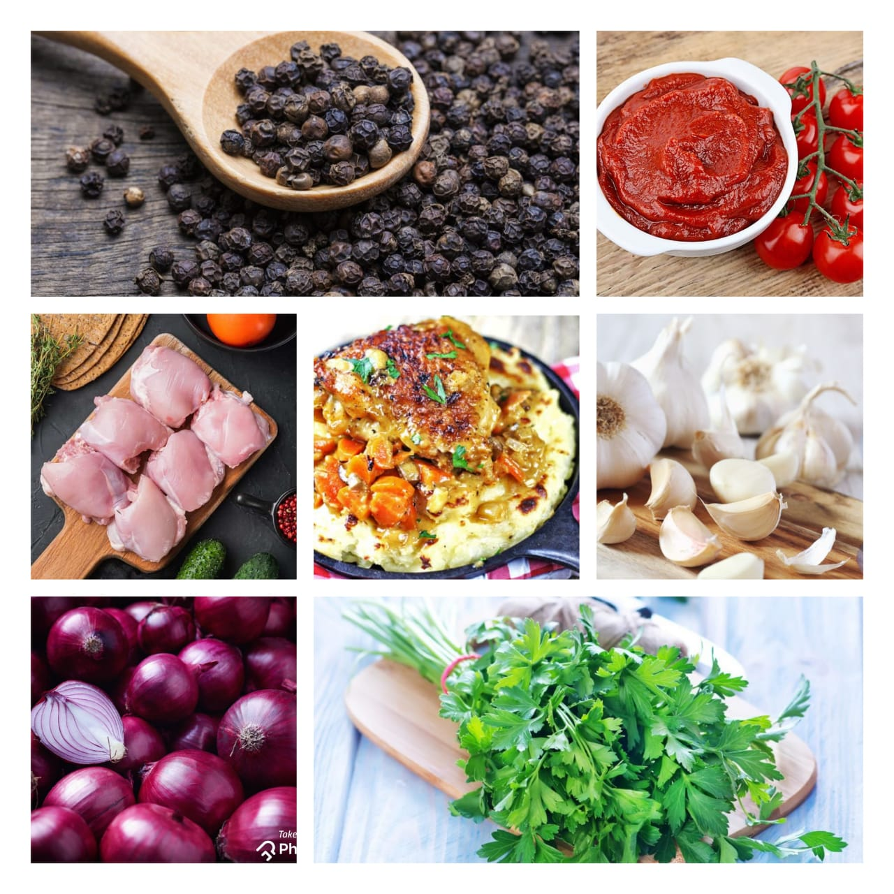

Osso Buco
Home
Has dinner gotten boring lately? Need something to spice up your regular routine? Well get ready folks, because today I'm sharing my chicken spin on the classic Italian dish Osso Buco. This Chicken Osso Buco is rich, comforting and over the top full of flavor! Perfect for those busy weeknights, but fabulous for company too!

If you've never tried Osso Buco, it's an Italian dish traditionally made with veal shanks. It's braised with onions, carrots, celery, tomatoes, wine and broth. The incredibly rich and flavorful sauce over the moist, tender chicken makes for an irresistible, comforting dish that will make your so-so weeknight dinner spectacular! Enjoy!
Ingredients
8 chicken thighs (bone-in, skin on)
1/2 cup all-purpose flour
1/2 teaspoon Kosher salt
1/4 teaspoon black pepper
1 onion (diced)
1 carrot (peeled, diced)
2 cloves garlic (minced)
1 tablespoon tomato paste
1 cup white wine
1 cup chicken stock
1/2 teaspoon dried rosemary
1/2 teaspoon dried thyme
parsley for garnish

Nutrition Facts
Calories 251
Total Fat 14.5g
Cholestero 217mg
Sodium 1352mg
Total Carbohydrate 10.6g
Vitamin C 36%
vitamin A 85%
Procedure
Add the flour in a shallow plate and season with salt and pepper.Dredge both sides of the chicken thighs in the seasoned flour, shaking off the excess.
In a large Dutch oven over medium heat, add olive oil.Sear the chicken thighs until browned on both sides.
Do this in two batches of 4 so you don't crowd the plate. Remove browned thighs to a plate.
Add the onion and carrot and sauté until soft, about 5 minutes. Add 2 cloves minced garlic, and cook about 1 more minute.
Add tomato paste mix well with all the ingredients and cook for another minute. Add the wine, chicken stock, rosemary and thyme.
Cook until the liquids are reduced by about half. Add the chicken back to the pan and reduce heat to low, cover and simmer 45 minutes until chicken is cooked through.
Serve over mashed potatoes, serve a chicken thigh and a spoonful of veggies and sauce. Top with parsley if you would like.
Expert Guide
Back ←
Scroll to Top ↑